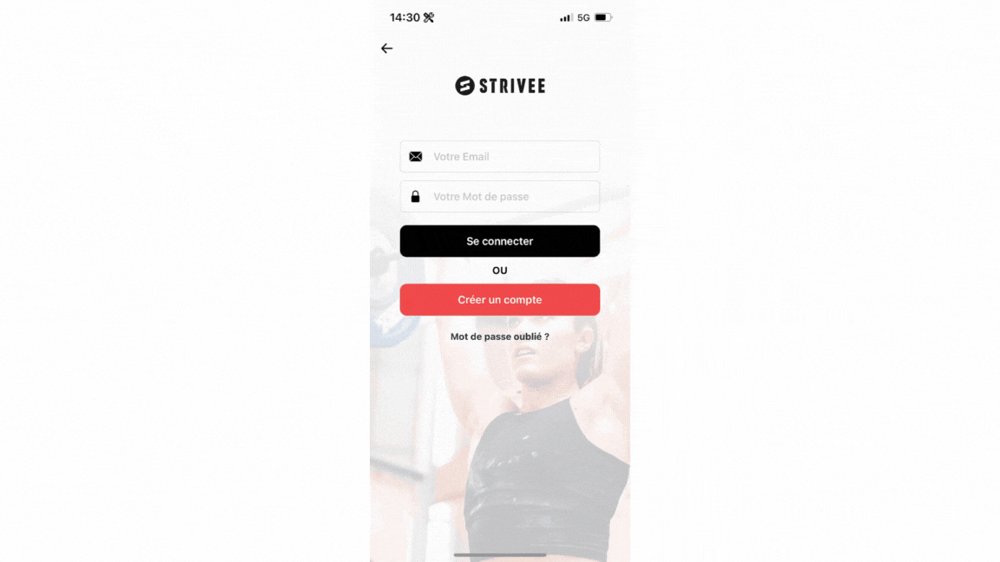
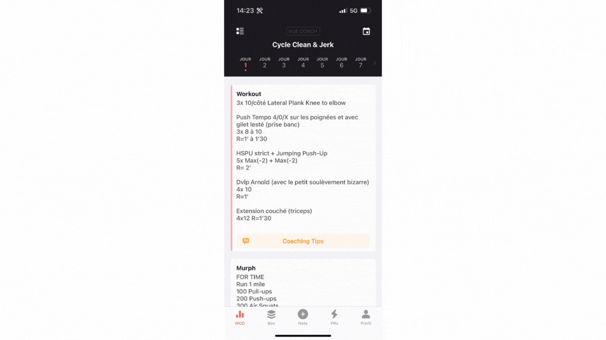
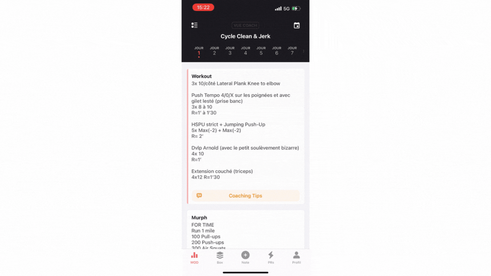
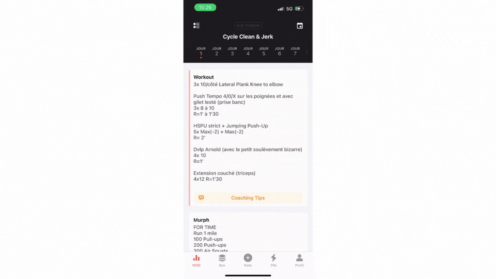
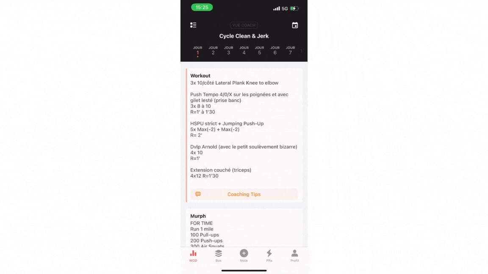
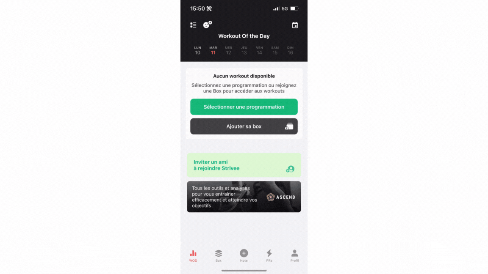

Strivee : le mode d'emploi
3 août 2026
Chez Hygie, on suit nos entraînements sur Strivee : le WOD du jour, tes scores, tes PRs et le classement de la box. Voici tout ce qu'il faut savoir pour bien l'utiliser, en images (merci à l'équipe Strivee pour les démos animées).
1. S'inscrire sur Strivee
Télécharge l'appli sur iPhone ou Android, puis crée ton compte : avec ton adresse mail (« Créer un compte »), avec Facebook, ou avec Apple si tu es sur iPhone.

2. Rejoindre CrossFit Hygie
Pour voir le WOD du jour et le classement de la box, il faut être rattaché à CrossFit Hygie dans l'appli : onglet Profil, icône Paramètres en haut à droite, puis « Changer de Box ». Tape « CrossFit Hygie » et sélectionne la box. Un doute ? Demande au coach, c'est réglé en 30 secondes.

3. Noter ton résultat après le WOD
Le geste le plus important de l'appli : après ta séance, ouvre le workout du jour, clique sur « + Noter », entre ton résultat et « Enregistrer ». 30 secondes, et ton historique se construit séance après séance.
4. Enregistrer un PR
Nouveau record sur un mouvement ? Onglet PRs en bas à droite, choisis le mouvement dans sa catégorie, entre ton résultat et enregistre. C'est la base de tout le reste : calculateur de barre et Fit Level s'appuient sur tes PRs.

5. Retrouver tes workouts
Tout ce que tu as enregistré t'attend dans Profil puis le sous-onglet Workouts. Clique sur un workout pour en voir le détail. Idéal pour comparer avec ton score d'il y a trois mois et mesurer le chemin parcouru.

6. Préparer ta barre en 10 secondes
Le coach annonce « 75 % de ton max » ? Onglet PRs, clique sur le mouvement, fais glisser le graphique vers la gauche : tu tombes sur le calculateur de barres. Clique sur un pourcentage et l'appli te dit exactement quels disques charger.

7. Calculer ton Fit Level
Le Fit Level analyse ton niveau global et le décompose par catégorie. Onglet Profil, puis « Démarrer l'analyse » et laisse-toi guider.

💡 Il faut au moins 5 PRs enregistrés pour calculer ton Fit Level, et plus tu en enregistres, plus l'analyse est fidèle à ton vrai niveau. Raison de plus pour prendre le réflexe du point 4.
Un souci avec l'appli ?
Deux options : demande à ton coach au prochain cours (souvent le plus rapide), ou écris directement au support Strivee : support@strivee.app.
Et si tu débarques tout juste chez Hygie, la page Bien démarrer rassemble tout le reste : réservations, première séance, groupe WhatsApp.